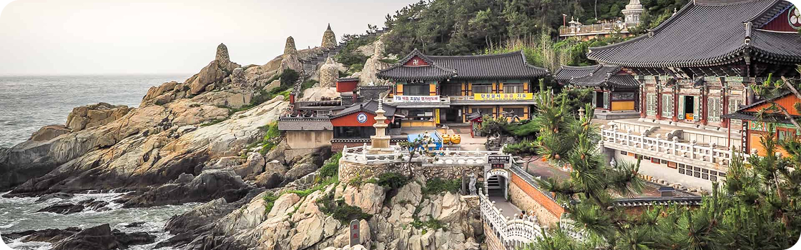

Busan, a estrela em ascensão da Coreia do Sul, oferece de tudo,
desde churrascarias de primeira linha até tradicionais barracas de
comida de rua. Aqui, exploramos a segunda cidade da Coreia do Sul
e descobrimos as suas ofertas culinárias.
Para os amantes de história
Descubra 3 destinos imperdíveis em Busan
As atrações de Busan vão desde templos budistas centenários que
pontilham as montanhas e o litoral da cidade até praias imaculadas
com águas cristalinas. Esta cidade litorânea tem muitas coisas para
fazer o ano todo - as famílias podem passar o tempo em um aquário à
beira-mar, os compradores podem explorar bairros vibrantes e os
amantes da natureza podem desfrutar de longas caminhadas até
mirantes panorâmicos. Os santuários budistas que pontilham a costa e
as montanhas de Busan têm uma arquitetura impressionante que irá
encantar os fotógrafos.

1. Templo Haedong Yonggungsa
O Templo Haedong Yonggungsa é um templo budista localizado no
extremo nordeste de Busan. Construído em 1376, é um dos poucos
templos na Coreia construídos à beira-mar – você pode desfrutar
de vistas do Mar do Leste de um lado e de belas montanhas do
outro.
O Templo Beomeo-sa é um dos maiores santuários da Coreia do Sul.
Ele está localizado no alto da borda leste da montanha
Geumjeongsa e fica distante da agitação da cidade. O Daeungjeon
Hall do templo é um exemplo bem preservado da arquitetura da
Dinastia Joseon.
O Parque Yongdusan, localizado no centro de Busan, abriga alguns
dos monumentos mais importantes da cidade. Você pode ver vistas
espetaculares do topo da Torre Busan, de 120 metros de altura. O
parque tem 2 museus – confira os instrumentos musicais
tradicionais no Museum of World Folk Instruments e mais de 80
veleiros coreanos no Exhibition Hall of World Model Boats.
Bom para:
・Casais
・Famílias
・Orçamento
As melhores coisas para fazer em Busan mostram a reputação da cidade
como um importante porto marítimo na Ásia. Frequentemente vista como
a essência da Coreia do Sul, você experimentará uma atmosfera única
em termos de diversidade étnica e cultural, já que a cidade recebe
um público cosmopolita o ano todo.